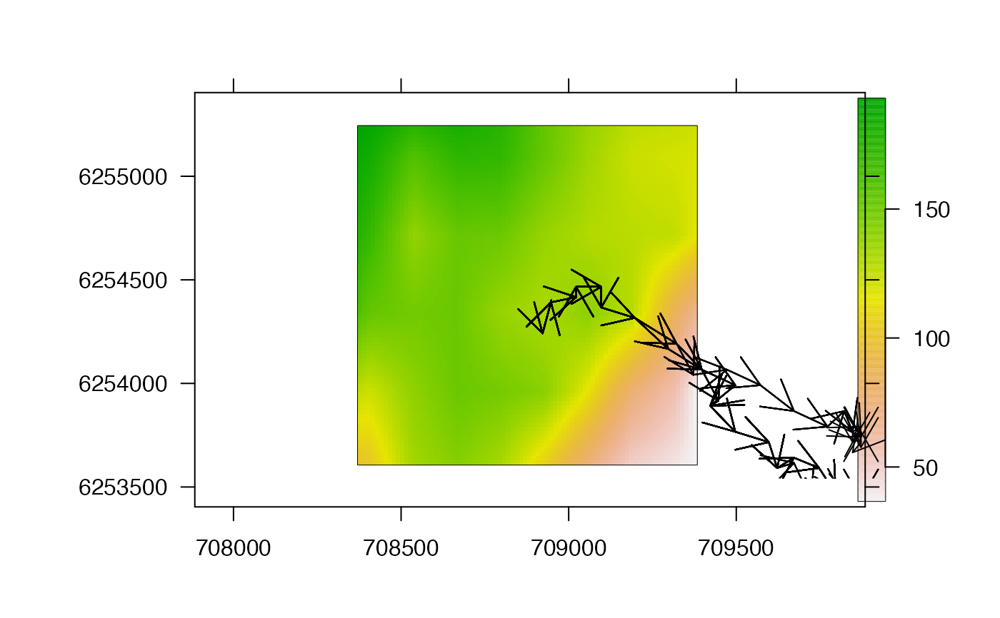
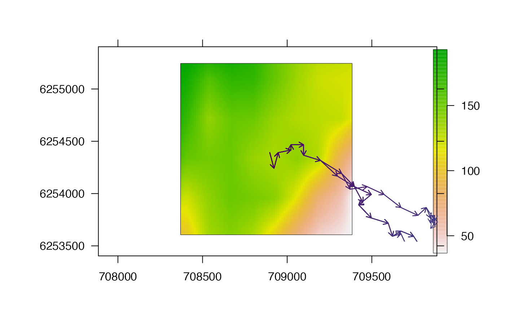

This function is a simple wrapper for pretty_map that maps the paths reconstructed by a particle filtering (PF) algorithm over a surface.
A dataframe containing reconstructed movement path(s) from pf via pf_simplify (see pf_path-class). At a minimum, this should contain a unique identifier for each path (named `path_id') and the x and y coordinates that define the trajectory of each path (`cell_x' and `cell_y').
A raster of the surface over which movement was reconstructed.
A named list, passed to pretty_map, to customise the appearance of the bathymetry surface.
A named list, passed to add_sp_path, to customise the appearance of the paths.
A logical input that defines whether or not plot each path on a separate plot, sequentially, with a pause between plots (prompt = TRUE), or all paths on a single plot (prompt = FALSE).
Additional arguments, passed to pretty_map, for plot customisation.
The function maps the trajectories of reconstructed paths across the surface, returning a single map if prompt = FALSE or one map for each path if prompt = TRUE.
pf implements the pf algorithm. pf_plot_history visualises particle histories, pf_plot_map creates an overall `probability of use' map from particle histories and pf_simplify processes these into a dataframe of movement paths. pf_plot_1d, pf_plot_2d and pf_plot_3d provide plotting routines for paths. For mapping, it can be useful to interpolate shortest (least-cost) paths between sequential locations via lcp_interp. pf_loglik calculates the log-probability of each path.
#### Implement pf() algorithm
# Here, we use pre-defined outputs for speed
bathy <- dat_dcpf_histories$args$bathy
paths <- dat_dcpf_paths
#### Example (1): The default implementation
pf_plot_2d(paths, bathy)
#> prettyGraphics::pretty_map() CRS taken as: 'NA'.
#> Warning: zero-length arrow is of indeterminate angle and so skipped
#> Warning: zero-length arrow is of indeterminate angle and so skipped
#> Warning: zero-length arrow is of indeterminate angle and so skipped
#> Warning: zero-length arrow is of indeterminate angle and so skipped
#> Warning: zero-length arrow is of indeterminate angle and so skipped
#> Warning: zero-length arrow is of indeterminate angle and so skipped
#> Warning: zero-length arrow is of indeterminate angle and so skipped

#### Example (2): Plot customisation options
# Customise the appearance of the path(s)
pf_plot_2d(paths, bathy,
add_paths = list(length = 0.075, col = viridis::viridis(100))
)
#> prettyGraphics::pretty_map() CRS taken as: 'NA'.
#> Warning: zero-length arrow is of indeterminate angle and so skipped
#> Warning: zero-length arrow is of indeterminate angle and so skipped
#> Warning: zero-length arrow is of indeterminate angle and so skipped
#> Warning: zero-length arrow is of indeterminate angle and so skipped
#> Warning: zero-length arrow is of indeterminate angle and so skipped
#> Warning: zero-length arrow is of indeterminate angle and so skipped
#> Warning: zero-length arrow is of indeterminate angle and so skipped

# Pass arguments to prettyGraphics::pretty_map() via ... , e.g.:
pf_plot_2d(paths, bathy, xlab = "Easting (UTM)", ylab = "Northing (UTM)")
#> prettyGraphics::pretty_map() CRS taken as: 'NA'.
#> Warning: zero-length arrow is of indeterminate angle and so skipped
#> Warning: zero-length arrow is of indeterminate angle and so skipped
#> Warning: zero-length arrow is of indeterminate angle and so skipped
#> Warning: zero-length arrow is of indeterminate angle and so skipped
#> Warning: zero-length arrow is of indeterminate angle and so skipped
#> Warning: zero-length arrow is of indeterminate angle and so skipped
#> Warning: zero-length arrow is of indeterminate angle and so skipped
#### Example (3): Plot individual paths separately
if (interactive()) {
pp <- graphics::par(mfrow = c(3, 4))
pf_plot_2d(paths, bathy,
add_paths = list(length = 0.01),
prompt = TRUE, verbose = FALSE
)
graphics::par(pp)
}